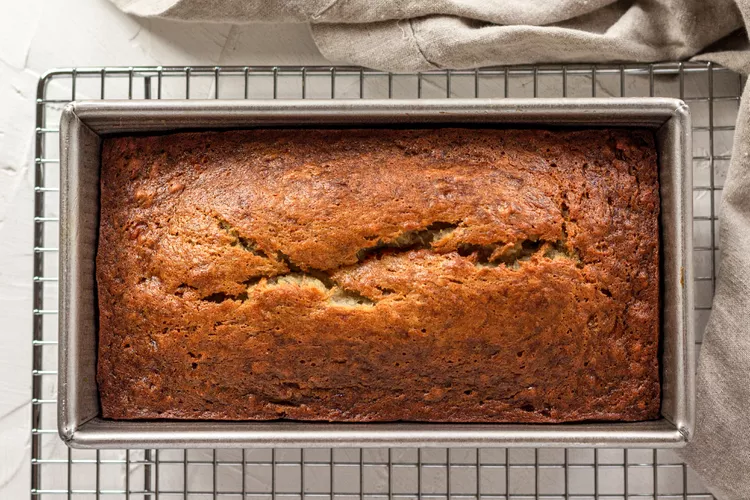
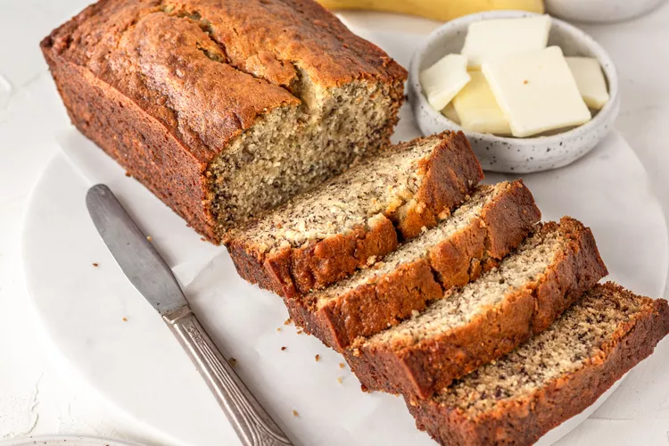

Banana Bread
Document
This banana bread has been most popular recipes for over 10 years. You can mix everything in one bowl,you can vary the amount of sugar or
bananas. The beauty of this banana bread recipe is you don't need a fancy mixer! A mixing bowl, a fork to whisk the eggs, and a sturdy spoon to mix the batter are all you need.
You can toss in a cup of chopped nuts, raisins, or chocolate chips if you want.

Preparation:
Preheat the oven and prepare the pan:
Preheat the oven to 350°F (175°C), and butter an 8 x 4-inch loaf pan.
Mash the bananas and add the butter:
In a mixing bowl, mash the ripe bananas with a fork until completely smooth. Stir the melted butter into the mashed bananas.
Smashing bananas to make banana bread.
Melted butter added to a bowl of mashed bananas.
Mix in the remaining ingredients:
Mix in the baking soda and salt. Stir in the sugar, beaten egg, and vanilla extract. Mix in the flour.
Sugar mixed with butter and bananas to make banana bread.
Flour added to a bowl of wet ingredients to make banana bread.
Bake the bread:
Pour the batter into your prepared loaf pan.
Banana bread batter poured into a loaf pan.
Bake for 55 to 65 minutes at 350°F (175°C), or until a toothpick or wooden skewer inserted into the center comes out clean. A few dry crumbs are okay; streaks of wet batter are not. If the outside of the loaf is browned but the center is still wet, loosely tent the loaf with foil and continue baking until the loaf is fully baked.
Cool and serve:
Remove from oven and let cool in the pan for a few minutes. Then remove the banana bread from the pan and let cool completely before serving. Slice and serve. (A bread knife helps to make slices that aren't crumbly.)
Wrapped well, the banana bread will keep at room temperature for 4 days. For longer storage, refrigerate the loaf up to 5 days, or freeze it.
Baked banana bread in a loaf pan.

Banana Recipe Video
Ingredients:
- very ripe bananas, peeled (about 1 1/4 to 1 1/2 cups mashed)
- melted butter, unsalted or salted
- baking soda (not baking powder)
- salt
- sugar (1/2 cup if you would like it less sweet, 1 cup if more sweet)
- large egg, beaten
- vanilla extract
- all-purpose flour
Measurements of Ingredients:
| Ingredients |
Measurements |
| very ripe bananas, peeled |
2 to 3 medium (7" to 7-7/8" long) |
| melted butter,salted or unsalted |
1/3 cup (76g) |
| baking soda |
1/2 teaspoon |
| salt |
1 pinch |
| sugar |
3/4 cup (150g) |
| large egg |
1 |
| vanilla extract |
1 teaspoon |
| all-purpose flour |
1 1/2 cups (205g) |